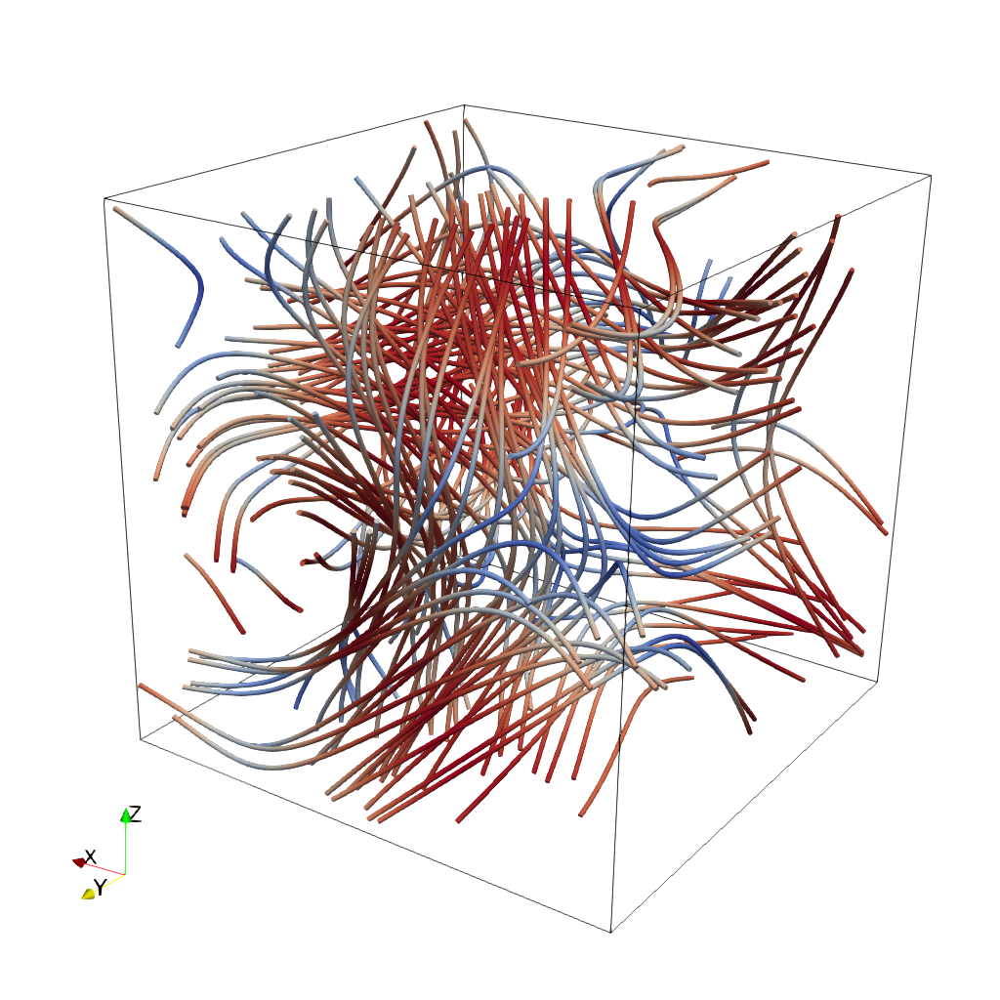

🎯 SciVisAgentBench Evaluation Report
📊 Overall Performance
Overall Score
45.3%
1101/2430 Points
Test Cases
31/48
Completed Successfully
Avg Vision Score
39.2%
Visualization Quality
641/1670
PSNR (Scaled)
12.10 dB
Peak SNR (12/31 valid)
SSIM (Scaled)
0.5742
Structural Similarity
LPIPS (Scaled)
0.4267
Perceptual Distance
Completion Rate
64.6%
Tasks Completed
ℹ️ About Scaled Metrics
Scaled metrics account for completion rate to enable fair comparison across different evaluation modes. Formula: PSNRscaled = (completed_cases / total_cases) × avg(PSNR), SSIMscaled = (completed_cases / total_cases) × avg(SSIM), LPIPSscaled = 1.0 - (completed_cases / total_cases) × (1.0 - avg(LPIPS)). Cases with infinite PSNR (perfect match) are excluded from the PSNR calculation.
🔧 Configuration
📝 ABC
44/45 (97.8%)
📋 Task Description
Your agent_mode is "chatvis_claude-sonnet-4-5_exp1", use it when saving results. Your working directory is "D:\Code\SciVisAgentBench\SciVisAgentBench-tasks\paraview", and you should have access to it. In the following prompts, we will use relative path with respect to your working path. But remember, when you load or save any file, always stick to absolute path.
Load the ABC (Arnold-Beltrami-Childress) flow vector field from "ABC/data/ABC_128x128x128_float32_scalar3.raw", the information about this dataset:
ABC Flow (Vector)
Data Scalar Type: float
Data Byte Order: Little Endian
Data Extent: 128x128x128
Number of Scalar Components: 3
Data loading is very important, make sure you correctly load the dataset according to their features.
Create streamlines using a "Stream Tracer" filter with "Point Cloud" seed type. Set the seed center to [73.77, 63.25, 71.65], with 150 seed points and a radius of 75.0. Set integration direction to "BOTH" and maximum streamline length to 150.0.
Add a "Tube" filter on the stream tracer to enhance visualization. Set tube radius to 0.57 with 12 sides.
Color the tubes by Vorticity magnitude using the 'Cool to Warm (Diverging)' colormap.
Show the dataset bounding box as an outline.
Use a white background. Render at 1024x1024.
Set the viewpoint parameters as: [-150.99, 391.75, 219.64] to position; [32.38, 120.41, 81.63] to focal point; [0.23, -0.31, 0.92] to camera up direction.
Save the visualization image as "ABC/results/{agent_mode}/ABC.png".
(Optional, but must save if use paraview) Save the paraview state as "ABC/results/{agent_mode}/ABC.pvsm".
(Optional, but must save if use python script) Save the python script as "ABC/results/{agent_mode}/ABC.py".
Do not save any other files, and always save the visualization image.
🖼️ Visualization Comparison
Ground Truth

Agent Result

Image not available📏 Vision Evaluation Rubrics
📊 Detailed Metrics
Visualization Quality
29/30
Output Generation
5/5
Efficiency
10/10
Completed in 33.80 seconds (excellent)
PSNR
14.51 dB
SSIM
0.8044
LPIPS
0.1430
Input Tokens
1,935
Output Tokens
2,612
Total Tokens
4,547
Total Cost
$0.0450